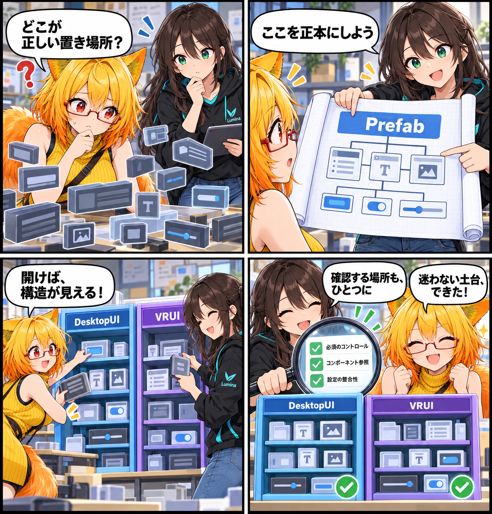

2026.10.06 / Development Log
置き場所を決めて、迷わせない日
固定UIを実行時に組み立て直すのではなく、DesktopUI・VRUIのPrefabを正本として扱う構成へ整理しました。
記事種別はdevelopment。集計期間は2026-10-05 03:00:00 JST〜2026-10-06 02:59:59 JST。参照ブランチはmain、終了時点のHEADは2b929d3d752d44e325450335a72beb41e39fb967（fixed UI prefab-authoritative）。対象は3コミットです。未コミット差分は実績へ含めていません。

画面の部品を、Prefabへ戻す
デスクトップとVRの固定UIについて、画面構成・操作部品・参照先をPrefabへ集約しました。実行時に足りない部品を生成して補う経路を減らし、表示の土台を開いたPrefabから確認できるようにしています。
確認も、同じ場所を見る
UI Prefab Validatorは、必要なボタンや入力欄、Slider、Dropdown、各UIコンポーネントの参照を確認するよう拡張されています。固定UIが想定どおりの構造かを、Prefabを基準に検査できます。
大きな整理を、迷わない入口に
今回の変更は119ファイルにまたがるUIリファクタリングです。機能を新しく増やしたというより、既存の操作画面を「どこで定義されているか」から追いやすくする土台づくりとして進めました。
4コマの裏話
今回は迷子の部品を設計図へ戻す工房の物語にしました。置き場所と確認場所をそろえることで、画面を開いた人が同じ構造を見られることを表しています。
まとめ
固定UIの正本をPrefabへ寄せ、実行時の補完に頼らず、検証も同じPrefab構造を確認する形へ整えました。
本日のひとこと
迷わない場所があると、直す場所も見つけやすい。